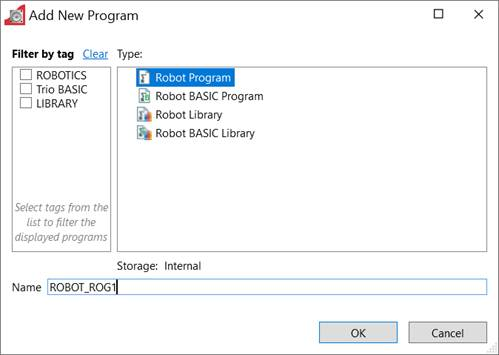
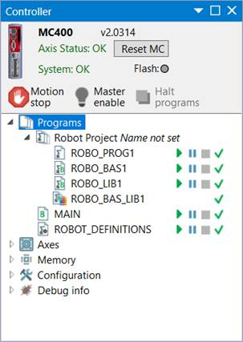
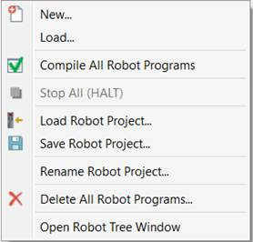
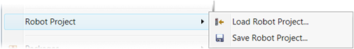

Since version 4.3 of MotionPerfect a new type of programs are available. They are related to robot application of motion coordinators and can be found in the standard “Add New Program” window.

A robot program can contain limited set of Trio BASIC commands, related just to robot operation.
A robot BASIC program can contain all the commands of a robot program plus other BASIC commands.
Any program of a robot type is automatically placed in a special group in the project tree. The meaning of that group is a “Robot project”. In other words a robot project is the set of robot programs on the controller.

The robot project is the set of programs of type “Robot Program” and “Robot BASIC Program” which are automatically placed in a separate group in the project tree.
Robot projects are mostly managed from the Trio Robot Pendant.
Often a robot project is related to a certain robot application. Changing (loading a new) robot project usually means changing the robot application.
All the programs in the robot project are object of atomic operations like “Load” “Save” (Export), etc. Most of them are available from the robot project context menu in the project tree. (See Robot Project Context Menu topic)

As well as from the “Project” menu:

The robot project can have its own name.